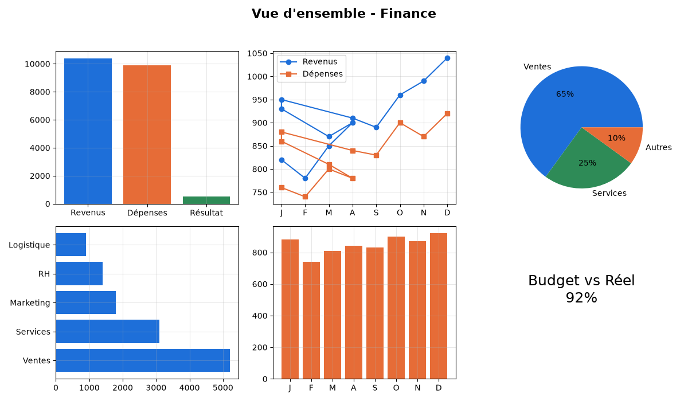
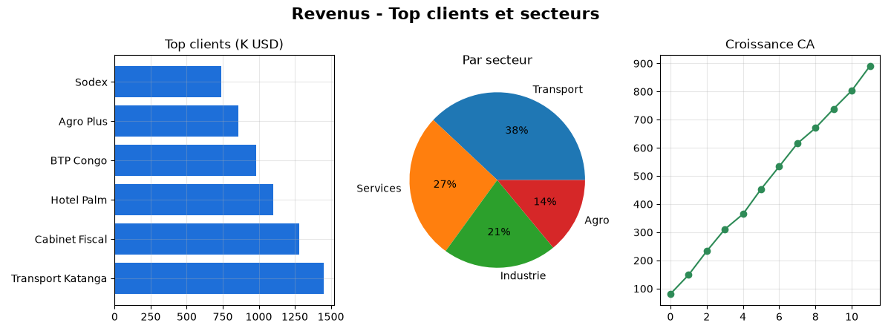
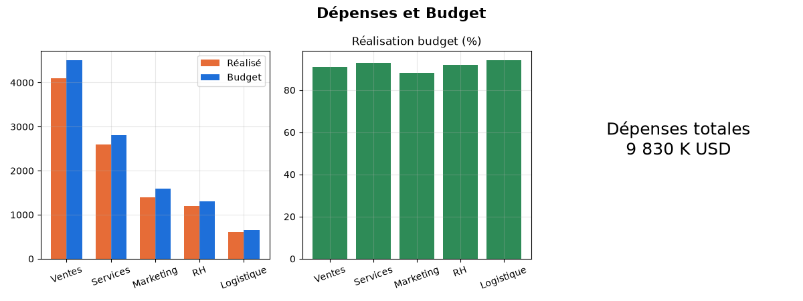

Trois dashboards Power BI construits sur des données fictives de 01/01/2024 à 31/12/2027 : un suivi financier complet (flux, budget vs réalisé), les ventes (commandes, produits, vendeurs) et les ressources humaines (paie, absences, formations). Le tout généré par scripts SQL, exporté en CSV et modélisé en format Power BI Project (.pbip) moderne.
Chaque dashboard est un projet Power BI (.pbip) prêt à ouvrir, avec 3 pages et des indicateurs clés.

~11 000 transactions, 65 clients, 15 comptes, budget vs réalisé. 3 tables, 8 mesures DAX, 14 visuals.

~7 400 commandes, ~22 000 lignes, 35 produits, 12 vendeurs.

120 employés, 4 464 bulletins de paie, absences, formations.
Trois bases MySQL indépendantes, chacune en schéma en étoile, avec des vues analytiques prêtes pour Power BI.
| Table | Type | Contenu |
|---|---|---|
dim_date | Dimension | Calendrier 2024 → 2027 (année, mois, trimestre, weekend) |
dim_client | Dimension | 65 clients (secteur, région, ville, segment) |
dim_compte | Dimension | Plan comptable (15 comptes, groupes) |
fact_transaction | Fait | ~11 000 transactions (montant, mode de paiement, statut) |
fact_budget | Fait | Budget mensuel par compte (720 lignes) |
| Table | Type | Contenu |
|---|---|---|
dim_produit | Dimension | 35 produits (catégorie, prix, coût, fournisseur) |
dim_vendeur | Dimension | 12 vendeurs (région, ville, équipe) |
dim_client | Dimension | 40 clients |
fact_commande | Fait | ~7 400 commandes (canal, statut, montant) |
fact_ligne_commande | Fait | ~22 000 lignes (quantité, prix, remise) |
fact_stock | Fait | ~21 000 mouvements de stock |
| Table | Type | Contenu |
|---|---|---|
dim_departement | Dimension | 10 départements (directeur, localisation, budget annuel) |
dim_employe | Dimension | 120 employés (poste, contrat, salaire de base, statut) |
fact_paie | Fait | 4 464 bulletins mensuels (brut, primes, impôts, net) |
fact_absence | Fait | ~280 absences (type, durée, motif) |
fact_formation | Fait | ~2 900 formations (thème, type, durée, coût) |
Finance : v_flux_financier (principale), v_revenus_mensuels, v_depenses_mensuelles, v_budget_vs_reel
Ventes : v_ventes_detail (principale), v_ventes_mensuelles, v_ventes_produits, v_performance_vendeurs, v_stock_actuel
RH : v_effectif, v_paie_mensuelle, v_absences_mensuelles, v_formations, v_budget_rh_vs_reel
Le dossier MudecorpFinance.pbip/ est un projet Power BI au format texte moderne :
le modèle sémantique (TMDL) contient 3 tables — FluxFinancier, Calendrier,
BudgetVsReel — chargées depuis les exports CSV, reliées par une relation
Calendrier → FluxFinancier (joinOnDateBehavior: datePartOnly), avec 8 mesures DAX.
Les mesures réellement implémentées dans le modèle sémantique du dashboard Finance.
De la génération des données à l'ouverture du dashboard dans Power BI Desktop.
RAND()).Le format .pbip est un aperçu : il nécessite Power BI Desktop de juillet 2025 ou plus récent avec les fonctionnalités d'aperçu activées.
MudecorpFinance.pbip dans le dossier MudecorpFinance.pbip/csv/finance/ (aucun pilote MySQL requis).pbip (dossier contenant le fichier du même nom). Le .pbix binaire ne peut être créé que par Power BI Desktop lui-même (Fichier → Enregistrer sous).Les exports CSV permettent un import direct. Pour utiliser la base MySQL à la place :
localhost:3306 — Base : bi_finance — Utilisateur root (sans mot de passe)Les scripts sont réexécutables : ils réinitialisent et régénèrent les données.
Tout le projet est versionné sur GitHub — scripts, données, projet Power BI et documentation.